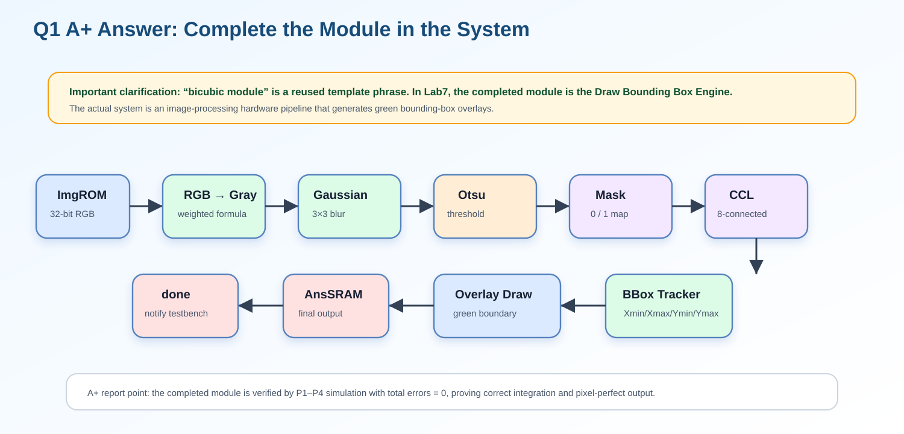
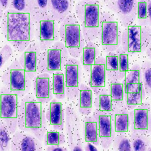

1. 題目原文與正確理解
Original requirement: Complete the bicubic module, in the system.
換句話說，這一題真正要回答的是：整個 Draw Bounding Box 系統是否已完成、是否已和 ImgROM / AnsSRAM / UrSRAM 介面正確整合、是否能完成最終標註影像輸出。
2. A+ 英文回答（可直接貼報告）
In this lab, the required image-processing module has been fully completed and integrated into the system. Although the original report template mentions a “bicubic module,” the actual required module in Lab 7 is the Draw Bounding Box Engine. Therefore, the completed design focuses on the full hardware pipeline for object detection and bounding-box drawing.
The system reads 32-bit RGB pixels from ImgROM, converts them into grayscale values, applies a 3×3 Gaussian blur filter to reduce noise, computes an Otsu threshold to generate a binary foreground/background mask, performs 8-connected connected-component labeling to identify valid object regions, extracts each object’s bounding-box coordinates, and finally overlays 1-pixel green boundary lines on the original RGB image. The final annotated image is written into AnsSRAM, and the done signal is asserted after all pixels are completed.
All stages are controlled by a finite state machine, and the memory interfaces are correctly connected to the testbench system. The completed module has been verified by simulation, and all P1–P4 patterns pass with zero errors, which proves that the module is correctly integrated and functions properly in the system.
3. 中文說明版（口語報告可用）
本實驗已完成整個 Draw Bounding Box 影像處理模組，並且正確整合到系統中。雖然題目模板寫的是 bicubic module，但本 Lab7 實際要求是完成 drawBbox engine。此系統會從 ImgROM 讀取 RGB 影像，依序進行灰階轉換、Gaussian 濾波、Otsu threshold 二值化、8-connected CCL、bounding box 座標擷取，最後在原始 RGB 影像上畫出綠色框線並寫入 AnsSRAM。整個流程由 FSM 控制，並已通過 P1～P4 測試，總錯誤數為 0，代表系統功能已完整且正確。
4. 系統流程圖（外部圖片載入）

5. 數學式：本模組完成的核心功能
RGB to Grayscale
Gaussian Filter
Otsu Threshold
Bounding Box
Overlay
6. Python Code 對應（Lab7.ipynb）
以下 Python code 可視為演算法 golden model，用來對照硬體流程：灰階、Gaussian、Otsu、CCL、bbox 與 overlay。
# Cell 5：RGB 轉灰階
def rgb_to_gray(rgb):
"""
Gray ≈ 0.299R + 0.587G + 0.114B
使用 np.rint() 做 round to nearest, ties to even
"""
r = rgb[..., 0].astype(np.float64)
g = rgb[..., 1].astype(np.float64)
b = rgb[..., 2].astype(np.float64)
gray_f = 0.299 * r + 0.587 * g + 0.114 * b
gray = np.rint(gray_f).astype(np.uint8)
return gray
gray = rgb_to_gray(rgb_img)
print("gray min/max =", gray.min(), gray.max())
plt.figure(figsize=(5, 5))
plt.imshow(gray, cmap="gray", vmin=0, vmax=255)
plt.title("Step 5: Grayscale")
plt.axis("off")
plt.show()
# -----------------------------
# Cell 6：3x3 Gaussian Filter（Reflect 101）
def gaussian_3x3_reflect101(gray):
"""
3x3 Gaussian
kernel =
1 2 1
2 4 2 / 16
1 2 1
邊界使用 np.pad(..., mode='reflect')
對應 Reflect 101
"""
kernel = np.array(
[[1, 2, 1],
[2, 4, 2],
[1, 2, 1]], dtype=np.int32
)
padded = np.pad(gray.astype(np.int32), ((1, 1), (1, 1)), mode="reflect")
out = np.zeros_like(gray, dtype=np.uint8)
for y in range(gray.shape[0]):
for x in range(gray.shape[1]):
win = padded[y:y+3, x:x+3]
val = np.sum(win * kernel) / 16.0
out[y, x] = np.rint(val).astype(np.uint8)
return out
gauss = gaussian_3x3_reflect101(gray)
plt.figure(figsize=(10, 4))
plt.subplot(1, 2, 1)
plt.imshow(gray, cmap="gray", vmin=0, vmax=255)
plt.title("Gray")
plt.axis("off")
plt.subplot(1, 2, 2)
plt.imshow(gauss, cmap="gray", vmin=0, vmax=255)
plt.title("Step 6: Gaussian")
plt.axis("off")
plt.show()
# -----------------------------
# Cell 7：Histogram + Otsu Threshold
def otsu_threshold(img):
hist = np.bincount(img.flatten(), minlength=256).astype(np.int64)
total = img.size
total_sum = np.dot(np.arange(256, dtype=np.int64), hist)
best_t = 0
best_sigma = -1.0
wb_count = 0
wb_sum = 0
for t in range(256):
wb_count += hist[t]
wb_sum += t * hist[t]
wf_count = total - wb_count
if wb_count == 0 or wf_count == 0:
continue
mub = wb_sum / wb_count
muf = (total_sum - wb_sum) / wf_count
wb = wb_count / total
wf = wf_count / total
sigma_b2 = wb * wf * (mub - muf) ** 2
if sigma_b2 > best_sigma:
best_sigma = sigma_b2
best_t = t
return best_t, hist
otsu_t, hist = otsu_threshold(gauss)
print("Otsu threshold =", otsu_t)
plt.figure(figsize=(8, 4))
plt.bar(np.arange(256), hist, width=1.0)
plt.axvline(otsu_t, color="r", linestyle="--", label=f"T={otsu_t}")
plt.title("Step 7: Histogram + Otsu")
plt.xlabel("Gray Level")
plt.ylabel("Count")
plt.legend()
plt.show()
# -----------------------------
# Cell 10：8-connected CCL
def ccl_8_connected(mask):
h, w = mask.shape
labels = np.zeros((h, w), dtype=np.int32)
visited = np.zeros((h, w), dtype=bool)
label = 0
nbrs = [
(-1, -1), (-1, 0), (-1, 1),
( 0, -1), ( 0, 1),
( 1, -1), ( 1, 0), ( 1, 1),
]
for y in range(h):
for x in range(w):
if mask[y, x] == 0 or visited[y, x]:
continue
label += 1
q = deque([(y, x)])
visited[y, x] = True
labels[y, x] = label
while q:
cy, cx = q.popleft()
for dy, dx in nbrs:
ny, nx = cy + dy, cx + dx
if 0 <= ny < h and 0 <= nx < w:
if mask[ny, nx] == 1 and not visited[ny, nx]:
visited[ny, nx] = True
labels[ny, nx] = label
q.append((ny, nx))
return labels, label
labels, label_count = ccl_8_connected(mask)
print("Step 10: Label count =", label_count)
plt.figure(figsize=(6, 6))
plt.imshow(labels, cmap="nipy_spectral")
plt.title(f"8-connected CCL (count={label_count})")
plt.axis("off")
plt.colorbar()
plt.show()
# -----------------------------
# Cell 12：畫綠色 Bounding Box Overlay
def overlay_bboxes(rgb, bboxes_valid):
out = rgb.copy()
for _, box in bboxes_valid.items():
xmin, xmax = box["xmin"], box["xmax"]
ymin, ymax = box["ymin"], box["ymax"]
out[ymin, xmin:xmax+1] = GREEN
out[ymax, xmin:xmax+1] = GREEN
out[ymin:ymax+1, xmin] = GREEN
out[ymin:ymax+1, xmax] = GREEN
return out
overlay_rgb = overlay_bboxes(rgb_img, bboxes_valid)
plt.figure(figsize=(10, 5))
plt.subplot(1, 2, 1)
plt.imshow(rgb_img)
plt.title("Original RGB")
plt.axis("off")
plt.subplot(1, 2, 2)
plt.imshow(overlay_rgb)
plt.title("Step 12: Overlay with Green BBoxes")
plt.axis("off")
plt.show()7. Verilog Code 對應（drawBbox.v）
FSM / State Integration
output reg [31:0] Ans_D, // AnsSRAM 寫入資料
output reg [15:0] Ans_A // AnsSRAM address
);
// ============================================================
// 常數定義
// ============================================================
localparam [31:0] GREEN = 32'h0000_FF00; // bounding box 使用的綠色常數
localparam integer IMG_W = 256; // 影像寬度
localparam integer IMG_H = 256; // 影像高度
localparam integer NPIX = 65536; // 總 pixel 數 = 256 * 256
localparam integer MAX_LABELS = 4096; // CCL 最多允許的 provisional labels 數量
// ============================================================
// FSM 狀態定義
// ============================================================
// 整個影像處理流程以 FSM 依序執行，每個 state 負責一個處理階段。
localparam [5:0]
S_IDLE = 6'd0, // 等待 enable
S_LOAD = 6'd1, // 從 ImgROM 讀入整張 RGB 影像
S_GRAY = 6'd2, // RGB 轉 grayscale
S_HIST_CLEAR = 6'd3, // 清除 histogram
S_GAUSS_HIST = 6'd4, // Gaussian filter 並建立 histogram
S_OTSU_INIT = 6'd5, // Otsu threshold 初始化
S_OTSU_SCAN = 6'd6, // 掃描 0~255 找最佳 threshold
S_COUNT_HI = 6'd7, // 統計大於 threshold 的 pixel 數量
S_POLARITY = 6'd8, // 判斷是否需要 foreground/background 反轉
S_MASK_WRITE = 6'd9, // 產生 binary mask，並寫入 UrSRAM
S_PARENT_INIT = 6'd10, // 初始化 union-find parent 與 bbox 暫存
S_CCL_SCAN = 6'd11, // Connected Component Labeling 第一階段
S_BBOX_INIT = 6'd12, // 初始化 bounding box 資料
S_BBOX_SCAN = 6'd13, // 掃描 label 結果並計算 bbox
S_BOXMAP_CLEAR = 6'd14, // 清除 box_map
S_BOXMAP_GEN = 6'd15, // 根據 bbox 座標產生要畫綠框的位置
S_DRAW_WRITE = 6'd16, // 將原圖或綠框 pixel 寫入 AnsSRAM
S_DONE = 6'd17; // 完成
// FSM current state
reg [5:0] state;
// done_r 是 done 的暫存版本
reg done_r;RGB to Gray
refl101 = v;
end
endfunction
// ============================================================
// function: gray_round_rgb
// 功能：
// 將 32-bit RGB pixel 轉成 8-bit grayscale。
// 使用近似公式：
// gray = (77R + 150G + 29B) / 256
// 並使用 round-to-nearest, ties-to-even。
// ============================================================
function [7:0] gray_round_rgb;
input [31:0] pix;
integer rr, gg, bb;
integer s, q, rem;
begin
rr = pix[23:16]; // R
gg = pix[15:8]; // G
bb = pix[7:0]; // B
s = rr*77 + gg*150 + bb*29; // 加權總和
q = s >> 8; // 除以 256
rem = s & 8'hFF; // 取餘數判斷是否進位
// round-to-nearest
if (rem > 128)
q = q + 1;
// ties-to-even：剛好 0.5 時，若 q 為奇數才進位
else if ((rem == 128) && (q[0] == 1'b1))
q = q + 1;
gray_round_rgb = q[7:0];
end
endfunction
// ============================================================
// function: gray_at_reflect
// 功能：
// 依照 reflect101 邊界規則讀取 gray_mem。
// Gaussian filter 需要讀取周圍 3x3 pixel，因此邊界要反射處理。
// ============================================================
function [7:0] gray_at_reflect;
input integer xx;
input integer yy;Overlay / Draw
S_CCL_SCAN = 6'd11, // Connected Component Labeling 第一階段
S_BBOX_INIT = 6'd12, // 初始化 bounding box 資料
S_BBOX_SCAN = 6'd13, // 掃描 label 結果並計算 bbox
S_BOXMAP_CLEAR = 6'd14, // 清除 box_map
S_BOXMAP_GEN = 6'd15, // 根據 bbox 座標產生要畫綠框的位置
S_DRAW_WRITE = 6'd16, // 將原圖或綠框 pixel 寫入 AnsSRAM
S_DONE = 6'd17; // 完成
// FSM current state
reg [5:0] state;
// done_r 是 done 的暫存版本
reg done_r;
assign done = done_r;
// ============================================================
// 影像與中間結果記憶體
// ============================================================
reg [31:0] rgb_mem [0:NPIX-1]; // 儲存原始 RGB pixel
reg [7:0] gray_mem [0:NPIX-1]; // 儲存灰階結果
reg [7:0] gauss_mem [0:NPIX-1]; // 儲存 Gaussian filter 後結果
reg mask_mem [0:NPIX-1]; // binary mask：1=foreground，0=background
reg box_map [0:NPIX-1]; // 標記哪些 pixel 要被畫成綠框
reg [11:0] label_mem [0:NPIX-1]; // CCL label map
// grayscale histogram，灰階值 0~255 各自的 pixel 數
reg [31:0] hist [0:255];
// ============================================================
// CCL / Union-Find / Bounding Box 相關暫存
// ============================================================
reg [11:0] parent [0:MAX_LABELS-1]; // union-find parent table
reg bbox_valid [0:MAX_LABELS-1]; // 該 label 是否有效
reg bbox_border [0:MAX_LABELS-1]; // 該 component 是否碰到影像邊界
reg [7:0] bbox_xmin [0:MAX_LABELS-1]; // bbox 最小 x
reg [7:0] bbox_xmax [0:MAX_LABELS-1]; // bbox 最大 x
reg [7:0] bbox_ymin [0:MAX_LABELS-1]; // bbox 最小 y
reg [7:0] bbox_ymax [0:MAX_LABELS-1]; // bbox 最大 y
// ============================================================
// 計數器與控制暫存器
// ============================================================
reg [15:0] addr_cnt; // 掃描 0~65535 pixel address
reg [16:0] req_cnt; // ImgROM read latency 用的 request counter
reg [11:0] next_label; // 下一個可使用的 label 編號
reg [11:0] label_idx; // 掃描 label table 使用
reg [7:0] edge_ctr; // 畫 bbox 邊界時使用的座標 counter
reg [1:0] edge_stage; // 0=top, 1=bottom, 2=left, 3=right
// ============================================================
// Otsu threshold 相關暫存器
// ============================================================
reg [7:0] otsu_t; // Otsu 找到的 threshold
reg invert_sel; // 是否要反轉 binary mask
reg [16:0] count_hi; // 大於 threshold 的 pixel 數量
reg [16:0] wb_acc; // Otsu background 累積 pixel count
reg [31:0] sum_b_acc; // Otsu background 灰階加權和
reg [7:0] otsu_idx; // 目前測試的 threshold index
reg [95:0] best_score; // 目前最大的 between-class variance 指標
reg [95:0] cand_score; // 當前 threshold 的 score
reg [47:0] lhs48, rhs48, diff48; // Otsu 計算用暫存
reg [31:0] denom32; // Otsu 分母
reg [31:0] sum_total; // 全圖灰階加權總和8. 實作結果圖（外部圖片載入）


9. 最終可貼答案（精簡版）
Although the report template mentions a bicubic module, the actual required module in Lab 7 is the Draw Bounding Box Engine. In this implementation, the complete drawBbox module has been finished and integrated into the system. The module reads RGB pixels from ImgROM, converts them to grayscale, applies Gaussian filtering, performs Otsu thresholding, generates a binary mask, executes 8-connected connected-component labeling, extracts bounding-box coordinates, and overlays green bounding boxes on the original image. The final annotated image is written to AnsSRAM, and the done signal is asserted after processing is complete. Simulation results show that all P1–P4 patterns pass with zero errors, proving that the module is functionally correct and properly integrated.